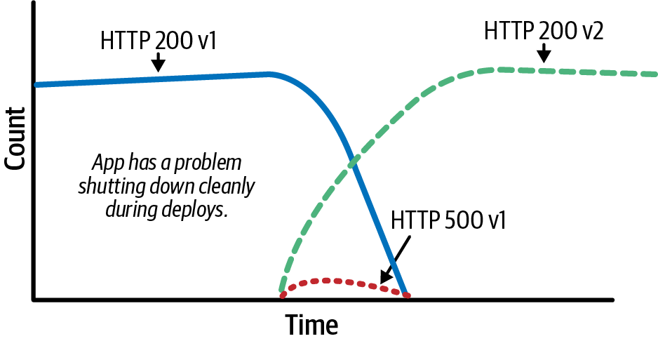
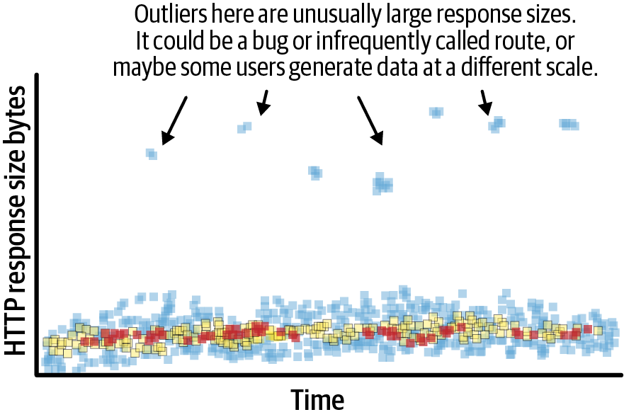
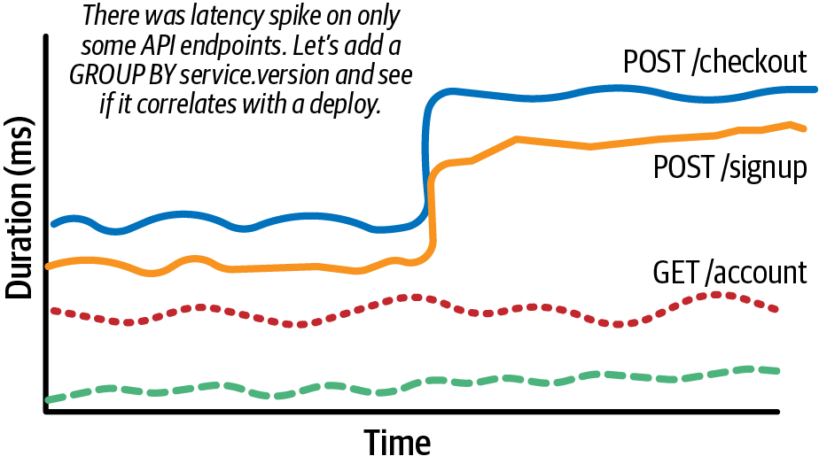
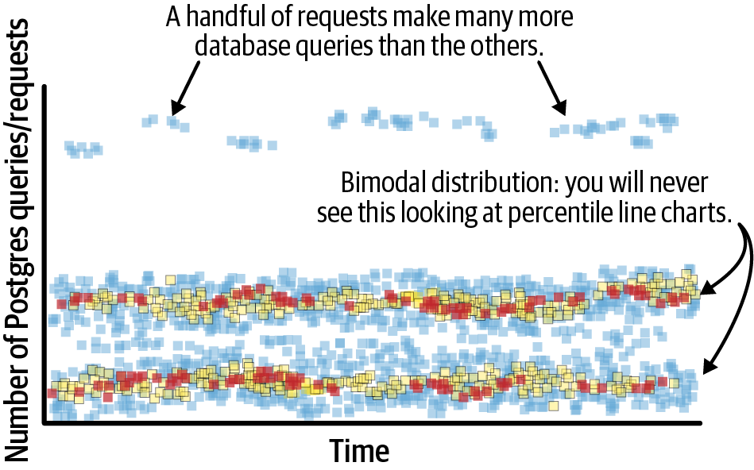
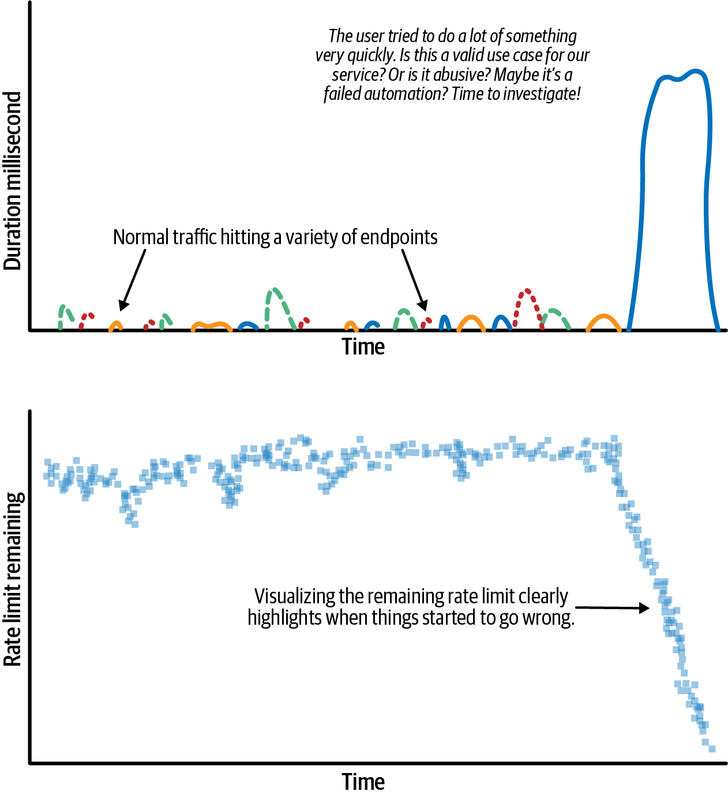
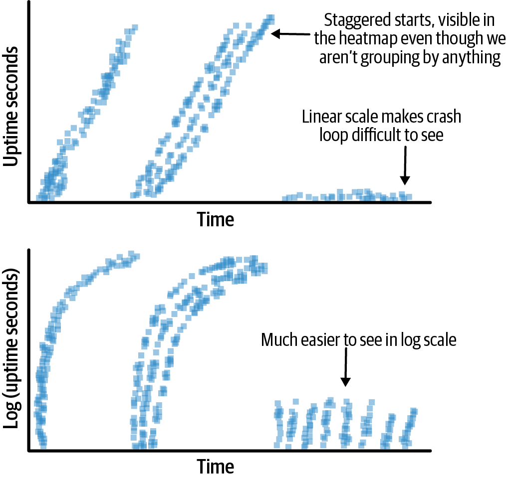
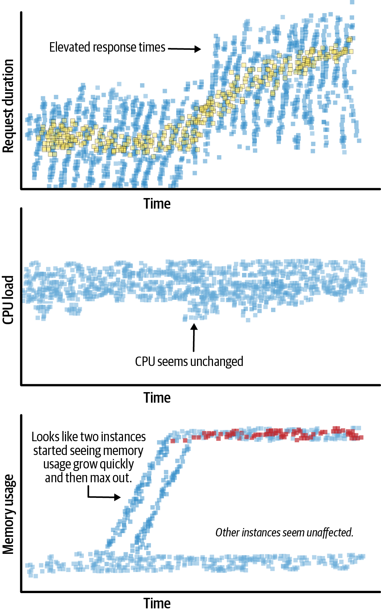

<title>第 6 章　讓結構化事件盡可能包含大量屬性 — 《可觀測性工程》第二版</title>
<link rel="stylesheet" href="style.css">

<nav class="chapnav">
    <a href="ch05.html">← 上一章</a>
    <a href="index.html">目錄</a>
    <a href="ch07.html">下一章 →</a>
  </nav>
<main>
  <header class="masthead">
    <span class="eyebrow">Observability Engineering · Second Edition</span>
    
    <h1 class="title serif">第 6 章<br>讓結構化事件盡可能包含大量屬性</h1>
    <div class="rule"></div>
  </header>

  <h2 class="section serif">本章由 Jeremy Morrell 撰寫，</h2>
<h2 class="section serif">Cloudflare 首席工程師</h2>
<h3 class="subsection">來自 Charity、Liz、George 與 Austin 的說明</h3>
<p>在上一章中，我們說明了指標、日誌與追蹤如何都能拆解為同一種共通的資料型別：包含大量屬性的結構化事件——這種資料型別可用來在以可觀測性為基礎的調查過程中，產生任何所需的檢視方式。不過，我們當時主要著重在展示能說明「結構化事件」這部分的範例。在本章中，我們將說明如何讓這些結構化事件變得「包含大量屬性」。</p>
<p>在可觀測性中，你的結構化事件應該盡可能包含大量屬性，以便擷取足夠完整的上下文來進行除錯。擁有關於任一系統事件的豐富上下文，能讓你在不需要事先合併資料的情況下，回答未曾預期的問題並執行複雜的分析。在調查新型或複雜故障時，最有用的資料通常涉及在高基數欄位之間比較離群值。</p>
<p>包含大量屬性的結構化事件消弭了日誌、指標與追蹤之間的界線，將它們合而為單一資料結構，提供一個統一的視角來分析系統行為。這代表你應該主動將事件設計得包含大量屬性，把諸如用戶 ID、feature flag 與請求細節等有助於找出問題的欄位，都納入單一資料結構中，藉此免除昂貴且複雜的資料合併作業。</p>
<p>所謂「包含大量屬性」的結構化事件，意味著單一事件所能容納的上下文量，在實務上不應存在限制。在一個統一的可觀測性系統中，你應該盡可能在事件中保留足夠多的資料，以備日後調查之需。實際上，這代表任何一個包含大量屬性的結構化事件，其所包含的資料都同時具備高維度與高基數的特性。</p>
<p>稍後我們會在探討分析（第 8 章）與資料儲存工作負載（第 12 章與第 13 章）時，檢視實務上的限制。現在，讓我們先聚焦於應該納入哪些類型的檢測，以打造盡可能包含大量屬性、實用的事件。</p>
<p>本章其餘部分是從 Jeremy Morrell 的角度撰寫的。</p>
<p>為了能回答任何隨意提出的問題，你需要擷取系統中存在的各種條件資訊。在前一章中，我們以 web 伺服器請求為例，介紹了簡單的範例。由於當時的目標是說明各種遙測資料型別之間的關聯，我們並未詳細說明還有哪些其他值得擷取的實用屬性。</p>
<p>你會在請求發生時，把系統狀態的資料寫入各種屬性中來加以擷取。在思考該擷取哪些內容時，想出十來個屬性其實相對容易。但實際需要的屬性數量很可能遠超乎你的預期。在檢測良好的程式碼庫中，通常會有數百個屬性。</p>
<p>在本章中，我會帶你了解這各式各樣的系統條件，並具體說明在每種情況下應該擷取哪些類型的值。請注意，雖然這一節列出了一長串屬性，但絕非詳盡無遺。</p>
<h2 class="section serif">服務與程式碼情境</h2>
<p>在思考該擷取哪些屬性時，服務與程式碼情境是不錯的切入點。這些屬性能把「是不是有東西壞掉了？」這類問題，轉變成「我們確切知道是哪個東西壞了、在哪裡壞的、誰負責、以及發生了什麼變更」這樣的答案。</p>
<h2 class="section serif">服務中繼資料</h2>
<figure class="plate">
<figcaption><strong>表 6‑1．服務屬性</strong></figcaption>
<div class="table-wrap">
<table class="datatable">
<thead><tr><th>屬性</th><th>範例</th><th>說明</th></tr></thead>
<tbody><tr><td>service.name</td><td>api, shoppingcart</td><td>此服務的名稱</td></tr><tr><td>service.environment</td><td>production, staging, development</td><td>此服務執行所在的環境</td></tr><tr><td>service.team</td><td>web-services, dev-ex</td><td>擁有此服務的團隊——有助於在事故期間知道該找誰值班</td></tr><tr><td>service.slack_channel</td><td>web-services, dev-ex</td><td>如果發現問題，應聯繫何處</td></tr></tbody>
</table>
</div>
</figure><pre class="code"><span class="tok-keyword">SELECT</span>
  <span class="tok-keyword">COUNT_DISTINCT</span>(service.name)
<span class="tok-keyword">WHERE</span>
  service.environment = <span class="tok-string">"production"</span>
<span class="tok-keyword">GROUP</span> <span class="tok-keyword">BY</span> service.team</pre>
<p>接下來，你是否曾經查看過系統的負載，然後想「這對於執行此系統的機器來說是否合適？」然後你必須翻查其他工具或設定檔才能取得那些資訊。這時你可以把該上下文放進包含大量屬性的事件（wide event）中，在需要時就能取得，藉此避免這種麻煩。</p>
<p>表 6‑2 列出了幾個值得擷取的基礎設施元資料範例。</p>
<figure class="plate">
<figcaption><strong>表 6‑2．基礎設施屬性</strong></figcaption>
<div class="table-wrap">
<table class="datatable">
<thead><tr><th>屬性</th><th>範例</th><th>說明</th></tr></thead>
<tbody><tr><td>instance.id</td><td>656993bd-40e1-4c76-baff-0e50e158c6eb</td><td>對應到此服務單一實例的 ID</td></tr><tr><td>instance.memory_mb</td><td>12336</td><td>此服務可用的 RAM 容量</td></tr><tr><td>instance.cpu_count</td><td>4, 8, 196</td><td>此服務可用的核心數量</td></tr><tr><td>instance.type</td><td>m6i.xlarge</td><td>供應商對此實例類型的名稱</td></tr></tbody>
</table>
</div>
</figure><pre class="code"><span class="tok-keyword">SELECT</span>
  service.name,
  instance.memory_mb,
  instance.<span class="tok-keyword">type</span>
<span class="tok-keyword">ORDER</span> <span class="tok-keyword">BY</span> instance.memory_mb DESC
<span class="tok-keyword">GROUP</span> <span class="tok-keyword">BY</span> service.name, instance.<span class="tok-keyword">type</span>
<span class="tok-keyword">LIMIT</span> <span class="tok-number">10</span></pre>
<p>更進一步，你應該加入所有與你如何編排系統相關的資訊。OpenTelemetry Kubernetes 語意慣例中對檢測的規範已經把這些整理得很好，但我還是在表6‑3 中列出了一些範例供你參考。</p>
<figure class="plate">
<figcaption><strong>表 6‑3．編排屬性</strong></figcaption>
<div class="table-wrap">
<table class="datatable">
<thead><tr><th>屬性</th><th>範例</th><th>說明</th></tr></thead>
<tbody><tr><td>container.id</td><td>a3bf90e006b2</td><td>容器執行環境（container runtime）用來識別 Docker 容器的 ID</td></tr><tr><td>container.name</td><td>nginx-proxy, wordpress-app</td><td>容器執行環境使用的容器名稱</td></tr><tr><td>k8s.cluster.name</td><td>api-cluster</td><td>此服務執行所在的 Kubernetes 叢集名稱</td></tr><tr><td>k8s.pod.name</td><td>nginx-2723453542-065rx</td><td>此服務執行所在的 Kubernetes pod 名稱</td></tr><tr><td>cloud.availability_zone</td><td>us-east-1c</td><td>此服務執行所在的可用區</td></tr><tr><td>cloud.region</td><td>us-east-1</td><td>此服務執行所在的區域</td></tr></tbody>
</table>
</div>
</figure><figure class="plate">
<figcaption><strong>表 6‑4．PaaS 編排屬性</strong></figcaption>
<div class="table-wrap">
<table class="datatable">
<thead><tr><th>屬性</th><th>範例</th><th>說明</th></tr></thead>
<tbody><tr><td>heroku.dyno</td><td>web.1, worker.3</td><td>應用程式執行時設定的環境變數（env var）DYNO</td></tr><tr><td>heroku.dyno_type</td><td>web, worker</td><td>DYNO 環境變數中點號之前的第一部分（分開後更容易查詢）</td></tr><tr><td>heroku.dyno_index</td><td>1, 3</td><td>DYNO 環境變數中點號之後的第二部分（分開後更容易查詢）</td></tr><tr><td>heroku.dyno_size</td><td>performance-m</td><td>選定的 dyno 規格</td></tr><tr><td>heroku.space</td><td>my-private-space</td><td>你部署所在的私有空間名稱</td></tr><tr><td>heroku.region</td><td>virginia, oregon</td><td>應用程式所在的區域</td></tr></tbody>
</table>
</div>
</figure><pre class="code"><span class="tok-keyword">SELECT</span>
  <span class="tok-keyword">COUNT_DISTINCT</span>(heroku.dyno_index)
<span class="tok-keyword">GROUP</span> <span class="tok-keyword">BY</span> service.name, heroku.dyno_type, instance.<span class="tok-keyword">type</span></pre>
<p>當然，這些只是個開端。但希望透過這些範例的啟發，你能看出還有哪些細節對你和你的團隊來說可能有用，值得加以擷取。</p>
<h2 class="section serif">建置資訊</h2>
<p>在任何事故中，最先被問到的問題往往是「剛剛有部署什麼東西嗎？」或「發生了什麼變更？」與其急著打開部署工具或翻查 GitHub 儲存庫，你可以把建置資料加進遙測資料中。</p>
<p>要把這些資料從建置系統串接到正式環境系統，讓它在執行期間可供存取，可能需要不少膠水程式碼，但在事故發生時能夠輕鬆取得這些資訊，其價值是無可估量的。</p>
<p>表 6‑5 展示了一些實用的建置資訊範例。</p>
<figure class="plate">
<figcaption><strong>表 6‑5．建置資訊屬性</strong></figcaption>
<div class="table-wrap">
<table class="datatable">
<thead><tr><th>屬性</th><th>範例</th><th>說明</th></tr></thead>
<tbody><tr><td>service.version</td><td>v123, 9731945429d3d083eb78666c565c61bcef39a48f</td><td>版本字串，或建置映像檔的雜湊值</td></tr><tr><td>service.build.id</td><td>acd8bb57-fb9f-4b2d-a750-4315e99dac64</td><td>此次建置的唯一識別碼</td></tr><tr><td>service.build.git_hash</td><td>6f6466b0e693470729b669f3745358df29f97e8d</td><td>此次建置對應的 git commit hash</td></tr><tr><td>service.build.pull_request_url</td><td>https://github.com/your-company/api-service/pull/121</td><td>觸發此次部署的已合併 pull request 之 URL</td></tr><tr><td>service.build.diff_url</td><td>https://github.com/your-company/api-service/compare/c9d9380..05e5736</td><td>比較前一次部署 commit 與此次新部署 commit 的比對 URL</td></tr><tr><td>service.build.deployment.at</td><td>2024-10-14T19:47:38Z</td><td>此次部署發生的時間</td></tr><tr><td>service.build.deployment.user</td><td>keanu.reeves@your-company.com</td><td>觸發此次部署的用戶</td></tr><tr><td>service.build.deployment.trigger</td><td>merge-to-main, slack-bot, api-request, config-change</td><td>觸發此版本應用程式部署的事件——讓你能快速區分某個問題是由設定變更、自動部署還是手動部署所引起</td></tr><tr><td>service.build.deployment.age_minutes</td><td>1, 10230</td><td>自此次部署以來經過的分鐘數</td></tr></tbody>
</table>
</div>
</figure><pre class="code"><span class="tok-keyword">SELECT</span>
  COUNT(*)
<span class="tok-keyword">WHERE</span>
  service.name = <span class="tok-string">"api-service"</span> AND
  main = <span class="tok-keyword">true</span>
<span class="tok-keyword">GROUP</span> <span class="tok-keyword">BY</span> http.status_code, service.version</pre>
<p>如果這個查詢是用來將性能視覺化，你的圖表可能會像圖 6‑1 那樣呈現。</p>
<p>此視覺化顯示，當 v2 開始服務流量時，由 v1 服務的 HTTP 200 OK 請求數量迅速下降。與此同時，HTTP 500 Internal Server Error 請求短暫地出現了一波高峰。若無法依版本區分，就很難判斷這些 500 錯誤是啟動 v2 伺服器的副作用，還是關閉 v1 伺服器所造成的問題。在這個案例中，所有 500 錯誤都來自 v1，因此我們應該確保系統能正確處理所有進行中的請求，並且能夠乾淨地關閉。</p>
<figure class="plate">
<figcaption>圖 6‑1　依 HTTP 狀態碼與版本分組的請求。可看到 500 錯誤出現尖峰，與v1 關閉的時間點相符。</figcaption></figure>
<h3 class="subsection">feature flag</h3>
<p>細粒度的 feature flag 是開發人員的超能力。它們讓你能只用一小部分用戶或流量，在生產環境中測試程式碼變更。搭配包含大量屬性的事件的廣泛可見性（我們會持續看到這點），表 6‑6 中的屬性能讓即使是棘手的遷移也變得更容易管理，並讓你有信心地發布程式碼。</p>
<figure class="plate">
<figcaption><strong>表 6‑6．Feature Flag 屬性</strong></figcaption>
<div class="table-wrap">
<table class="datatable">
<thead><tr><th>屬性</th><th>範例</th><th>說明</th></tr></thead>
<tbody><tr><td>feature_flag.auth_v2</td><td>true, false</td><td>此請求中特定 feature flag 的值</td></tr><tr><td>feature_flag.double_write_to_new_db</td><td>true, false</td><td>此請求中特定 feature flag 的值</td></tr></tbody>
</table>
</div>
</figure><pre class="code"><span class="tok-keyword">SELECT</span>
  COUNT
<span class="tok-keyword">WHERE</span>
  main = <span class="tok-keyword">true</span> AND
  service.name = <span class="tok-string">"api-service"</span> AND
<span class="tok-keyword">GROUP</span> <span class="tok-keyword">BY</span> feature_flag.auth_v2, exception.slug</pre>
<p>在每個請求中加入旗標資訊，能讓你在把更多流量導入新程式碼路徑的過程中，比較新程式碼的運作狀況。</p>
<h2 class="section serif">重要事項的版本</h2>
<p>收集你所使用的執行環境、框架以及任何主要函式庫的版本，能提供非常有幫助的上下文。表 6‑7 列出一些範例。</p>
<figure class="plate">
<figcaption><strong>表 6‑7．版本屬性</strong></figcaption>
<div class="table-wrap">
<table class="datatable">
<thead><tr><th>屬性</th><th>範例</th><th>說明</th></tr></thead>
<tbody><tr><td>go.version</td><td>go1.26.4</td><td>你所使用的語言執行環境版本</td></tr><tr><td>rails.version</td><td>7.2.1.1</td><td>挑出核心函式庫（如 Web 框架）並追蹤其版本</td></tr><tr><td>postgres.version</td><td>16.4</td><td>加入你所使用的任何資料儲存的版本</td></tr></tbody>
</table>
</div>
</figure><pre class="code"><span class="tok-keyword">SELECT</span>
  <span class="tok-keyword">COUNT_DISTINCT</span>(service.name)
<span class="tok-keyword">WHERE</span>
  service.environment = <span class="tok-string">"production"</span>
<span class="tok-keyword">GROUP</span> <span class="tok-keyword">BY</span> rails.version</pre>
<p>或者，假設突然間記憶體使用量比以往還高。我們不是最近才升級了 Go 版本嗎？這兩者有關聯嗎？執行一個查詢就能找出答案：</p>
<pre class="code"><span class="tok-keyword">SELECT</span>
  HEATMAP(metrics.memory_mb)
<span class="tok-keyword">WHERE</span>
  main = <span class="tok-keyword">true</span> AND
  service.name = <span class="tok-string">"api-service"</span>
<span class="tok-keyword">GROUP</span> <span class="tok-keyword">BY</span> <span class="tok-keyword">go</span>.version</pre>
<p>當系統狀況發生變化時，有許多有用的問題可以回答。但如果你沒有擷取重要系統元件的版本，就無法回答這些問題。還有哪些版本資訊對於了解系統運作可能很關鍵？把它加進你的包含大量屬性的事件中。（想進一步了解實務上如何實現這一點，請參閱第 8 章。）</p>
<h2 class="section serif">請求與執行流程</h2>
<p>關於請求與執行流程的遙測資料，能將單一追蹤或日誌行轉變成一段連貫的敘事，說明工作是如何在系統中流動的：呼叫了什麼、依什麼順序、每個步驟花了多久時間、以及哪裡出了問題。這是從「這個服務很慢」推進到「這條路由很慢，是因為這個下游呼叫很慢」最快的方法。專注於這些屬性，就能讓大規模、可重複地找到這類答案成為可能。</p>
<h2 class="section serif">HTTP 資訊</h2>
<p>雖然你可以從追蹤程式庫的檢測中取得大多數與 HTTP 資訊有關的屬性，但通常還有更多可以額外加入。表 6‑8 展示一些常見的著手點。</p>
<figure class="plate">
<figcaption><strong>表 6‑8．HTTP 資訊屬性</strong></figcaption>
<div class="table-wrap">
<table class="datatable">
<thead><tr><th>屬性</th><th>範例</th><th>說明</th></tr></thead>
<tbody><tr><td>server.address</td><td>example.com, localhost</td><td>收到請求的 HTTP 伺服器主機名稱</td></tr><tr><td>url.path</td><td>/checkout, /account/123/features</td><td>網域之後的 URI 路徑</td></tr><tr><td>url.scheme</td><td>http, https</td><td>所使用的 URI scheme</td></tr><tr><td>url.query</td><td>q=test, ref=####</td><td>URI 查詢字串部分</td></tr><tr><td>http.request.id</td><td>79104EXAMPLEB723</td><td>平台的 request ID（如果存在），例如 x-request-id、x-amz-request-id</td></tr><tr><td>http.request.method</td><td>GET, PUT, POST, OPTIONS</td><td>HTTP 請求方法</td></tr><tr><td>http.request.body_size</td><td>3495</td><td>請求承載內容的大小（位元組）</td></tr><tr><td>http.request.header.content-type</td><td>application/json</td><td>特定請求標頭的值——此處以 content-type 為例，你可依服務需要選用其他標頭</td></tr><tr><td>http.response.status_code</td><td>200, 404, 500</td><td>HTTP 回應狀態碼</td></tr><tr><td>http.response.body_size</td><td>1284, 2202009</td><td>回應承載內容的大小（位元組）</td></tr><tr><td>http.response.header.content-type</td><td>text/html</td><td>特定回應標頭的值——此處以 content-type 為例，你可依服務需要選用其他標頭</td></tr></tbody>
</table>
</div>
</figure><pre class="code"><span class="tok-keyword">SELECT</span>
  HEATMAP(http.response.body_size),
<span class="tok-keyword">WHERE</span>
  main = <span class="tok-keyword">true</span> AND
  service.name = <span class="tok-string">"api-service"</span></pre>
<p class="fn">圖 6‑2 的視覺化呈現了範例查詢所接收資料的圖形化表示。</p>
<figure class="plate">
<figcaption>圖 6‑2. 回應大小的熱圖：大部分落在固定範圍內，但有明顯的離群值值得進一步調查。</figcaption></figure>
<p>在此可以看到，某些 HTTP 請求的回應主體大小異常大。這些離群值在調查性能異常時可能提供有用的線索。它們可能是錯誤，也可能是合理的資料——無論是來自很少被呼叫的路由，還是回傳大量資料集的用戶請求。</p>
<p>HTTP User‑Agent 標頭包含大量資訊。不要仰賴正規表示式查詢來事後解析它們。有了包含大量屬性的事件，從一開始就沒有理由不將它們解析成結構化資料。表 6‑9 列出了值得擷取的實用用戶代理元資料。</p>
<figure class="plate">
<figcaption><strong>表 6‑9．User-Agent 屬性</strong></figcaption>
<div class="table-wrap">
<table class="datatable">
<thead><tr><th>屬性</th><th>範例</th><th>說明</th></tr></thead>
<tbody><tr><td>user_agent.original</td><td>Mozilla/5.0 (Windows NT 10.0; Win64; x64) AppleWebKit/537.36 (KHTML, like Gecko) Chrome/129.0.0.0 Safari/537.3</td><td>HTTP User-Agent 標頭的值</td></tr><tr><td>user_agent.device</td><td>computer, tablet, phone</td><td>由 User-Agent 標頭推導出的裝置類型</td></tr><tr><td>user_agent.OS</td><td>Windows, MacOS</td><td>由 User-Agent 標頭推導出的作業系統</td></tr><tr><td>user_agent.browser</td><td>Chrome, Safari, Firefox</td><td>由 User-Agent 標頭推導出的瀏覽器</td></tr><tr><td>user_agent.browser_version</td><td>129, 18.0</td><td>由 User-Agent 標頭推導出的瀏覽器版本</td></tr></tbody>
</table>
</div>
</figure><pre class="code"><span class="tok-keyword">SELECT</span>
  COUNT(*)
<span class="tok-keyword">GROUP</span> <span class="tok-keyword">BY</span> user_agent.browser, user_agent.browser_version</pre>
<p>如果你的組織內部有任何慣用的自訂 user agent 或標頭慣例，也請一併解析出來，如表 6‑10 所示。</p>
<figure class="plate">
<figcaption><strong>表 6‑10．自訂 User-Agent 或自訂標頭屬性</strong></figcaption>
<div class="table-wrap">
<table class="datatable">
<thead><tr><th>屬性</th><th>範例</th><th>說明</th></tr></thead>
<tbody><tr><td>user_agent.service</td><td>api-gateway, auth-service</td><td>如果你採用分散式架構，讓每個服務都送出一個帶有自己名稱的自訂 User-Agent 標頭</td></tr><tr><td>user_agent.service_version</td><td>v123, 6f6466b0e693470729b669f3745358df29f97e8d</td><td>讓每個服務送出的自訂 User-Agent 標頭中帶有自己的版本</td></tr><tr><td>user_agent.app</td><td>iOS, android</td><td>如果請求來自行動應用程式，請確保其中包含是哪一個應用程式</td></tr><tr><td>user_agent.app_version</td><td>v123, 6f6466b0e693470729b669f3745358df29f97e8d</td><td>如果請求來自行動應用程式，請確保其中包含使用中的是哪一個版本</td></tr></tbody>
</table>
</div>
</figure>
<p>同樣地，你會從標準檢測函式庫自動取得許多這類屬性。但根據你使用的工具不同，也可能無法取得。舉例來說，如果你的組織使用非標準的標頭，你可能需要手動加入其中一些。</p>
<p>務必檢視自動檢測所取得的屬性有哪些。如果你沒有為上述這些實用情境擷取到遙測資料，別猶豫，動手加上去。不要只滿足於檢測函式庫預設提供的內容！</p>
<h2 class="section serif">路由資訊</h2>
<p>我們還沒討論完 HTTP 屬性！其中最重要的部分之一，就是該請求所匹配到的API 端點。追蹤程式庫通常會自動幫你提供這項資訊，但並非總是如此。可以考慮將路由參數與查詢參數也提取出來，作為額外的屬性，如表 6‑11 所示。</p>
<figure class="plate">
<figcaption><strong>表 6‑11．路由資訊屬性</strong></figcaption>
<div class="table-wrap">
<table class="datatable">
<thead><tr><th>屬性</th><th>範例</th><th>說明</th></tr></thead>
<tbody><tr><td>http.route</td><td>/team/{team_id}/user/{user_id}</td><td>URL 路徑所匹配的路由模式</td></tr><tr><td>http.route.param.team_id</td><td>14739, team-name-slug</td><td>URL 路徑在解析每個參數時所擷取出的區段</td></tr><tr><td>http.route.query.sort_dir</td><td>asc</td><td>與此服務回應相關的查詢參數（例如 ?sort_dir=asc&amp;...）</td></tr></tbody>
</table>
</div>
</figure><pre class="code"><span class="tok-keyword">SELECT</span>
  P99(duration_ms)
<span class="tok-keyword">WHERE</span>
  main = <span class="tok-keyword">true</span> AND
  service.name = <span class="tok-string">"api-service"</span>
<span class="tok-keyword">GROUP</span> <span class="tok-keyword">BY</span> http.route</pre>
<p>在圖 6‑3 中，我們看到了 P99 延遲的視覺化結果。</p>
<figure class="plate">
<figcaption>圖 6‑3. 依路由拆解的 P99 圖表。只有部分路由出現尖峰。可依應用程式版本進一步拆解此視圖，以檢查這是否是由某次部署所造成。</figcaption></figure>
<p>如果沒有路由資訊，你只會看到請求數突然出現尖峰，卻無法進一步得知這些緩慢請求有什麼共同點。透過依 HTTP 路由對請求進行分組，在這個範例中，你可以看到只有 POST /checkout 與 POST /signup 這兩個路由的請求較慢。</p>
<h3 class="subsection">時間資訊</h3>
<p>在回應請求所需完成的工作中，我發現把它拆成幾個重要的區段，並在包含大量屬性的事件上追蹤每個區段花費的時間，是非常有用的做法。</p>
<p>你可能會想問：「等等，子跨度不就是做這件事的嗎？」</p>
<p>把幾乎所有東西都包成自己的跨度，是我看到工程師剛接觸追蹤工具時最常見的失敗模式。你必須依照你想要查詢資料的方式來設計資料結構。</p>
<p>子跨度有助於針對單一請求做瀑布圖視覺化，但要在所有請求之間進行查詢與視覺化就會比較困難。把重要的時間資訊放在單一跨度上，能讓查詢更容易，也有助於像 Honeycomb 的 BubbleUp（見第 8 章）這類工具，讓它能立刻告訴你某一群請求之所以緩慢，是因為驗證在某種原因下花了 10 秒鐘。</p>
<figure class="plate">
<figcaption><strong>表 6‑12．時間資訊屬性</strong></figcaption>
<div class="table-wrap">
<table class="datatable">
<thead><tr><th>屬性</th><th>範例</th><th>說明</th></tr></thead>
<tbody><tr><td>auth.duration_ms</td><td>52.2, 0.2</td><td>這次請求中花在驗證身分上的時間</td></tr><tr><td>payload_parse.duration_ms</td><td>22.1, 0.1</td><td>找出此服務的核心工作量，並為它們加上時間紀錄</td></tr></tbody>
</table>
</div>
</figure><pre class="code"><span class="tok-keyword">SELECT</span>
  P99(parse_span.duration_ms)
<span class="tok-keyword">FROM</span> spans <span class="tok-keyword">AS</span> main_span
<span class="tok-keyword">JOIN</span> spans <span class="tok-keyword">AS</span> parse_span <span class="tok-keyword">ON</span> main_span.trace_id = parse_span.trace_id
<span class="tok-keyword">WHERE</span>
  main_span.main = <span class="tok-keyword">true</span> AND
  main_span.service.name = <span class="tok-string">"api-service"</span> AND
  parse_span.name = <span class="tok-string">"payload-parse"</span>
<span class="tok-keyword">GROUP</span> <span class="tok-keyword">BY</span> main_span.user.<span class="tok-keyword">type</span>, main_span.cloud.region</pre>
<p>成熟的可觀測性工具能夠以額外處理成本執行這類查詢；然而，我們應該謹記這些資料將會如何被使用。我們希望優先考慮快速、迭代式的探索，這種探索經常發生在應對進行中的事故時，而且我們希望團隊中的任何工程師都能輕鬆地在可觀測性工具中導航。</p>
<p>從這個角度來看，找出幾個重要的計時並將其加入包含大量屬性的事件中，即使會產生輕微的資料重複，也是相當值得的。</p>
<h2 class="section serif">非同步請求摘要</h2>
<p>使用追蹤系統時，非同步請求應該擁有自己的跨度，但將部分統計資訊彙總起來，仍有助於找出異常值並快速找到有趣的追蹤。表 6‑13 展示了幾個將這些資訊彙總成屬性的範例。</p>
<figure class="plate">
<figcaption><strong>表 6‑13．非同步請求摘要屬性</strong></figcaption>
<div class="table-wrap">
<table class="datatable">
<thead><tr><th>屬性</th><th>範例</th><th>說明</th></tr></thead>
<tbody><tr><td>stats.http_requests_count</td><td>1, 140</td><td>處理此請求期間觸發的 HTTP 請求數</td></tr><tr><td>stats.http_requests_duration_ms</td><td>849</td><td>花在這些 HTTP 請求上的累計時間</td></tr><tr><td>stats.postgres_query_count</td><td>7, 742</td><td>處理此請求期間觸發的 Postgres 查詢數</td></tr><tr><td>stats.postgres_query_duration_ms</td><td>1254</td><td>花在這些 Postgres 查詢上的累計時間</td></tr><tr><td>stats.redis_query_count</td><td>3, 240</td><td>處理此請求期間觸發的 Redis 查詢數</td></tr><tr><td>stats.redis_query_duration_ms</td><td>43</td><td>花在這些 Redis 查詢上的累計時間</td></tr><tr><td>stats.twilio_calls_count</td><td>1, 4</td><td>處理此請求期間觸發的、對此供應商 API 的呼叫數</td></tr><tr><td>stats.twilio_calls_duration_ms</td><td>2153</td><td>花在這些供應商呼叫上的累計時間</td></tr></tbody>
</table>
</div>
</figure><pre class="code"><span class="tok-keyword">SELECT</span>
  HEATMAP(stats.postgres_query_count)
<span class="tok-keyword">WHERE</span>
  main = <span class="tok-keyword">true</span> AND
  service.name = <span class="tok-string">"api-service"</span></pre>
<p>我的服務對資料庫發出的呼叫次數應該算合理⋯⋯對吧？</p>
<p>在圖 6‑4 中，我們可以看到這個範例查詢的結果。</p>
<figure class="plate">
<figcaption>圖 6‑4：每個請求的資料庫查詢熱圖：呈現雙峰分佈，但也有一些發出大量請求的離群值。</figcaption></figure>
<p>此視覺化以熱圖呈現，顯示出雙峰分佈，大多數請求遵循資料庫通訊的兩種模式之一。然而，你也會注意到，有一小部分請求所消耗的流量遠遠超過正常水準。</p>
<h2 class="section serif">錯誤</h2>
<p>如果你遇到錯誤且需要讓該操作失敗，請在跨度上加入包含錯誤資訊的屬性：類型、堆疊追蹤等等。</p>
<p>我發現一種非常有價值的方法，就是在每個拋出錯誤的位置，標記一個描述該錯誤的唯一 slug。如果這個字串在你的程式碼庫中是唯一的，就能透過快速搜尋輕鬆找到它。這讓你可以直接跳</p>
<p>從儀表板上錯誤數量的暴增，直接對應到丟出該錯誤的確切程式碼行。它也提供了一個方便的低基數欄位可用於 GROUP BY。</p>
<p>你不太可能將所有可能的錯誤都包起來，但只要失敗請求沒有 exception.slug，就是一個很好的訊號，代表你的程式碼中有些地方的錯誤處理可以改進。現在要找出以你未預期方式失敗的請求範例就變得非常容易。</p>
<p>你可以像這樣把錯誤處理加進檢測程式碼中：</p>
<pre class="code"><span class="tok-keyword">if</span> isNotRecoverable(err) {
  <span class="tok-comment">// note the use of a plain string, not a variable</span>
  <span class="tok-comment">// not dynamically generated</span>
  <span class="tok-comment">// consider enforcing this with custom lint rules</span>
  setErrorAttributes(err, <span class="tok-string">"err-stripe-call-failed-exhausted-retries"</span>);
  <span class="tok-keyword">throw</span> err;
}</pre>
<p>表 6‑14 展示了各種應該在屬性中擷取的錯誤資訊類型。</p>
<figure class="plate">
<figcaption><strong>表 6‑14．錯誤資訊屬性</strong></figcaption>
<div class="table-wrap">
<table class="datatable">
<thead><tr><th>屬性</th><th>範例</th><th>說明</th></tr></thead>
<tbody><tr><td>error</td><td>true, false</td><td>標記此請求是否失敗的專用欄位</td></tr><tr><td>exception.message</td><td>Can't convert 'int' object to str, undefined is not a function</td><td>此例外中所編碼的訊息</td></tr><tr><td>exception.type</td><td>IOError, java.net.ConnectException</td><td>此例外的程式化類型</td></tr><tr><td>exception.stacktrace</td><td>ReferenceError: user is not defined at myFunction (/path/to/file.js:12:2) ...</td><td>若有提供，擷取堆疊追蹤以協助定位錯誤的拋出位置</td></tr><tr><td>exception.expected</td><td>true, false</td><td>讓你能篩選掉那些無法避免、但也不必擔心的例外（例如某個機器人嘗試存取不存在的網址）</td></tr><tr><td>exception.slug</td><td>auth-error, invalid-route, github-api-unavailable</td><td>建立一個獨特、可被搜尋的 slug，用來在開發時期就能識別出錯誤發生的程式碼位置（如果可預期的話）</td></tr></tbody>
</table>
</div>
</figure><pre class="code"><span class="tok-keyword">SELECT</span>
  <span class="tok-keyword">COUNT_DISTINCT</span>(user.id)
<span class="tok-keyword">WHERE</span>
  main = <span class="tok-keyword">true</span> AND
  service.name = <span class="tok-string">"api-service"</span> AND
  user.<span class="tok-keyword">type</span> = <span class="tok-string">"enterprise"</span>
<span class="tok-keyword">GROUP</span> <span class="tok-keyword">BY</span> exception.slug</pre>
<p>或者，當您想找出可能需要改進錯誤處理的追蹤時，可以使用以下查詢：</p>
<pre class="code"><span class="tok-keyword">SELECT</span>
  trace.trace_id
<span class="tok-keyword">WHERE</span>
  main = <span class="tok-keyword">true</span> AND
  service.name = <span class="tok-string">"api-service"</span> AND
  error = <span class="tok-keyword">true</span> AND
  exception.slug = NULL
<span class="tok-keyword">GROUP</span> <span class="tok-keyword">BY</span> trace.trace_id</pre>
<p>雖然追蹤程式庫已為許多屬性提供了完善的預設值，但不要止步於此。檢視您的檢測自動擷取了哪些內容，找出缺口並補齊。「某個東西很慢」和「/checkout 路由很慢，因為版本 3.2.8 的行動裝置用戶端的請求驗證耗時 10 秒」之間的差異，往往只在於您自己新增的幾個精心挑選的屬性。</p>
<h2 class="section serif">用戶與業務脈絡</h2>
<p>關於用戶與業務脈絡的遙測，能讓您把技術行為和真實世界的影響連結起來：誰受到了影響、他們原本想做什麼，以及這個問題是否對應到特定的租戶、客群、方案、工作流程等等。它讓除錯變成了優先順序的判斷，因為您可以區分「奇怪的邊緣案例」和「高價值客戶的關鍵營收路徑正在故障」。</p>
<h2 class="section serif">用戶與客戶資訊</h2>
<p>一旦您掌握了基本要領，這就是您能新增的最重要的元資料。沒有任何自動化的 SDK 能自動理解您用戶模型的特定細節。</p>
<p>首先，讓我們來談談要加入的用戶資訊類型，如表 6‑15 所示。</p>
<figure class="plate">
<figcaption><strong>表 6‑15．用戶與客戶屬性</strong></figcaption>
<div class="table-wrap">
<table class="datatable">
<thead><tr><th>屬性</th><th>範例</th><th>說明</th></tr></thead>
<tbody><tr><td>user.id</td><td>2147483647, user@example.com</td><td>這是用戶的主要 ID。如果這是電子郵件並且你正在使用供應商服務，請考慮貴組織對於在外部服務中放入個人識別資訊（PII）的政策</td></tr><tr><td>user.type</td><td>free, premium, enterprise, vip</td><td>企業通常會有方法將用戶分類成群組，或找出對業務基本面有特別重大影響力的用戶。個別帳戶有時會佔業務收入的 10% 以上，或佔用不成比例的系統負載。務必確保你能將他們的流量與其他人區分開來！</td></tr><tr><td>user.auth_method</td><td>token, basic-auth, jwt, sso-github</td><td>這是用戶用來驗證登入你系統的方法</td></tr><tr><td>user.team.id</td><td>5387, web-services</td><td>你的系統可能有方法將用戶分組，例如「團隊」或「組織」。請擷取所有這些的屬性。有時團隊會遇到不會影響其他用戶的錯誤或邊緣案例</td></tr><tr><td>user.org.id</td><td>278, enterprise-name</td><td>如果此用戶隸屬於擁有企業合約的組織，請務必追蹤這一點！識別受事件影響的高消費客戶，能讓你的客戶經理主動聯繫他們</td></tr><tr><td>user.creation_timestamp</td><td>1753833600, 1722307200</td><td>此帳號建立時間的時間戳記。運用這個時間戳記，能讓你區分：問題是發生在剛使用你應用程式的新用戶身上，還是要等用戶使用夠久、累積了大量資料後才會出現</td></tr><tr><td>user.assumed</td><td>true</td><td>如果你有內部機制可以為了除錯而假冒用戶身分，請務必追蹤這一點。這也很可能是滿足安全稽核要求的必要項目</td></tr><tr><td>user.assumed_by</td><td>engineer-3@your-company.com</td><td>同時也要追蹤是哪個實際用戶在假冒該用戶的身分</td></tr></tbody>
</table>
</div>
</figure><pre class="code"><span class="tok-keyword">SELECT</span>
  P99(duration_ms)
<span class="tok-keyword">WHERE</span>
  main = <span class="tok-keyword">true</span> AND
  service.name = <span class="tok-string">"api-service"</span>
<span class="tok-keyword">GROUP</span> <span class="tok-keyword">BY</span> user.<span class="tok-keyword">type</span></pre>
<p>單一用戶或帳戶貢獻 10% 以上的營收是很常見的情況，而且他們的使用模式往往和一般用戶明顯不同。他們可能擁有更多用戶、儲存更多資料、使用僅限企業版的功能，並且會碰到那些每月只付 10 美元的用戶永遠不會遇到的限制與邊緣案例。</p>
<p>務必透過在包含大量屬性的事件中加入用戶屬性，將他們的流量與其他用戶區隔開來！</p>
<h2 class="section serif">速率限制</h2>
<p>無論你採用哪種速率限制策略，都要確保目前的速率限制資訊也一併加入屬性中。使用許多工具時，你很難快速找到被服務進行速率限制的用戶範例。你可以透過加入如表 6‑16 所示的屬性，來克服這個限制。</p>
<figure class="plate">
<figcaption><strong>表 6‑16．速率限制屬性</strong></figcaption>
<div class="table-wrap">
<table class="datatable">
<thead><tr><th>屬性</th><th>範例</th><th>說明</th></tr></thead>
<tbody><tr><td>ratelimit.limit</td><td>200000</td><td>速率限制系統目前實施的限額。系統早期可能所有用戶共用同一個速率限制，但隨著系統成熟，通常會有業務理由為不同用戶設定不同的速率限制</td></tr><tr><td>ratelimit.remaining</td><td>130000</td><td>此用戶剩餘的額度</td></tr><tr><td>ratelimit.used</td><td>70000</td><td>目前這個時間窗口已使用的額度</td></tr><tr><td>ratelimit.reset_at</td><td>2024-10-14T19:47:38Z</td><td>速率限制重置的時間。不同的速率限制演算法會有不同的參數。盡量擷取任何在面對憤怒客戶詢問為何被限速時有幫助的資訊</td></tr></tbody>
</table>
</div>
</figure><pre class="code"><span class="tok-keyword">SELECT</span>
  COUNT(*),
  HEATMAP(ratelimit.remaining)
<span class="tok-keyword">WHERE</span>
  main = <span class="tok-keyword">true</span> AND
  service.name = <span class="tok-string">"api-service"</span> AND
  user.id = <span class="tok-number">5838</span>
<span class="tok-keyword">GROUP</span> <span class="tok-keyword">BY</span> http.route</pre>
<p class="fn">圖 6‑5 是這個查詢的視覺化結果。</p>
<figure class="plate">
<figcaption>圖 6‑5：某位用戶活動的圖表：在最右側，可以看到一個打向同一個路由的大尖峰。這張圖為調查提供了一個起點。</figcaption></figure>
<p>在這個案例中，我們現在可以清楚看到用戶的行為突然改變，不斷猛烈存取單一端點，直到配額耗盡為止。這可能是用戶自行開發的自動化程式出了錯，也可能是他們的驗證憑證已經外洩，導致有人冒充其活動。深入探究像是被存取的路由、HTTP 用戶代理程式以及來源 IP 之類的元資料，應該有助於快速釐清這裡發生了什麼事。</p>
<h2 class="section serif">快取</h2>
<figure class="plate">
<figcaption><strong>表 6‑17．快取屬性</strong></figcaption>
<div class="table-wrap">
<table class="datatable">
<thead><tr><th>屬性</th><th>範例</th><th>說明</th></tr></thead>
<tbody><tr><td>cache.session_info</td><td>true, false</td><td>我們可能在記憶體內快取或鍵值儲存中保有工作階段資訊，也可能需要回頭查詢主要資料庫</td></tr><tr><td>cache.feature_flags</td><td>true, false</td><td>feature flag 經常會被快取，以避免每次請求都需要重新取得</td></tr></tbody>
</table>
</div>
</figure><h2 class="section serif">在地化資訊</h2>
<p>用戶選擇了哪些在地化選項？這經常是錯誤的來源之一。可考慮將在地化資訊加入你的包含大量屬性的事件中，如表 6‑18 所示。</p>
<figure class="plate">
<figcaption><strong>表 6‑18．在地化屬性</strong></figcaption>
<div class="table-wrap">
<table class="datatable">
<thead><tr><th>屬性</th><th>範例</th><th>說明</th></tr></thead>
<tbody><tr><td>localization.language_dir</td><td>rtl, ltr</td><td>用戶語言的文字排列方向</td></tr><tr><td>localization.country</td><td>mexico, uk</td><td>用戶所屬的國家。別忘了人是會移動的！這經常和他們的實際所在位置不同</td></tr><tr><td>localization.currency</td><td>USD, CAD</td><td>用戶偏好使用的貨幣</td></tr></tbody>
</table>
</div>
</figure><h2 class="section serif">維運資訊</h2>
<p>針對維運方面考量的遙測，正是讓你的系統得以被人員操作的關鍵。這類資訊在事件應變的情境中相當有幫助。</p>
<p class="fn">正常運行時間</p>
<p>追蹤服務在處理請求時已經運行多久，有助於視覺化呈現以下幾類錯誤：</p>
<p>• 重新開機時出現的問題 •</p>
<p>• 只有在服務運行一段長時間後才會出現的記憶體洩漏 •</p>
<p>• 若你設定服務在失敗時自動重啟，則頻繁當機或重啟的情況 •</p>
<figure class="plate">
<figcaption><strong>表 6‑19．運行時間屬性</strong></figcaption>
<div class="table-wrap">
<table class="datatable">
<thead><tr><th>屬性</th><th>範例</th><th>說明</th></tr></thead>
<tbody><tr><td>uptime_sec</td><td>1533</td><td>服務啟動至今經過的秒數，可用來將重啟視覺化</td></tr><tr><td>uptime_sec_log_10</td><td>3.185</td><td>服務啟動至今經過的秒數，並經過 log10 函式轉換。這個值呈次線性成長，讓你能在同一張圖上同時視覺化長時間執行與剛啟動的服務</td></tr></tbody>
</table>
</div>
</figure><pre class="code"><span class="tok-keyword">SELECT</span>
  HEATMAP(uptime_sec),
  HEATMAP(uptime_sec_log_10)
<span class="tok-keyword">WHERE</span>
  main = <span class="tok-keyword">true</span> AND
  service.name = <span class="tok-string">"api-service"</span></pre>
<p class="fn">圖 6‑6 顯示一個視覺化結果。</p>
<figure class="plate">
<figcaption>圖 6‑6　服務進入當機循環時運行時間的熱力圖：以對數尺度呈現資料時，異常情況更為明顯。</figcaption></figure>
<p>現在，我們對正在發生的事情有了重大線索！每個服務啟動後，運行幾秒鐘、處理一些流量，接著就進入當機循環。我們的下一步應該是加入 GROUP BY service.version，看看這是否與新版本發布有關。如果有關聯，那麼關於是什麼觸發了此次部署、是誰部署的，以及所部署的程式碼變更等中繼資料，很可能就能提供我們所需的脈絡，並大幅縮短事故調查的時間。</p>
<h2 class="section serif">指標</h2>
<p>我發現，用系統在處理請求時所經歷的情況相關脈絡來標記跨度，是很有幫助的做法。我加入了程式碼，每隔約 10 秒抓取一次這項資訊、將其快取在記憶體中，並將其加入該段時間內產生的每個包含大量屬性的事件裡。</p>
<figure class="plate">
<figcaption><strong>表 6‑20．指標屬性</strong></figcaption>
<div class="table-wrap">
<table class="datatable">
<thead><tr><th>屬性</th><th>範例</th><th>說明</th></tr></thead>
<tbody><tr><td>metrics.memory_mb</td><td>153, 2593</td><td>系統在服務此請求當下所使用的記憶體量</td></tr><tr><td>metrics.cpu_load</td><td>0.57, 5.89</td><td>系統在服務此請求當下的 CPU 負載，以活躍核心數量來衡量</td></tr><tr><td>metrics.gc_count</td><td>5390</td><td>最近觀察到的垃圾回收次數——可以是累計值（自服務啟動以來的總數）或差量值（例如最近一分鐘的次數）</td></tr><tr><td>metrics.gc_pause_time_ms</td><td>14, 325</td><td>花在垃圾回收上的時間——同樣可以是累計值或差量值（擇一並記錄清楚）</td></tr><tr><td>metrics.go_routines_count</td><td>3, 3000</td><td>正在執行的 Go routine 數量</td></tr><tr><td>metrics.event_loop_latency_ms</td><td>0, 340</td><td>等待下一次事件迴圈（event loop）tick 所花費的累計時間，對 Node.js 應用程式而言是重要指標</td></tr></tbody>
</table>
</div>
</figure><pre class="code"><span class="tok-keyword">SELECT</span>
  HEATMAP(duration_ms),
  HEATMAP(metrics.memory_mb),
  HEATMAP(metrics.cpu_load)
<span class="tok-keyword">WHERE</span>
  main = <span class="tok-keyword">true</span> AND
  service.name = <span class="tok-string">"api-service"</span>
<span class="tok-keyword">GROUP</span> <span class="tok-keyword">BY</span> instance.id</pre>
<p>執行此查詢會產生如圖 6‑7 所示的圖表。</p>
<p>請注意，以這種方式擷取指標在數學上並不嚴謹。因為你只有在有流量進來時才能取得資料，無法計算出經得起嚴格檢驗的 CPU 負載 P90 值，但在實務上通常沒有問題。</p>
<p>視覺化範例查詢的結果（如圖 6‑7 所示）已足夠讓你在除錯時快速獲得一些線索，而不需要切換到其他工具，尤其是當你能避免計算並改用熱力圖來視覺化時。</p>
<p>不過我不建議在這類資料上設定警報。一般的指標更適合用於此目的。</p>
<figure class="plate">
<figcaption>圖 6‑7　範例：使用結構化事件上標記的指標資料，來取得系統當前狀況的脈絡。</figcaption></figure>
<h2 class="section serif">一種過濾掉其他一切的慣例</h2>
<p>雖然我們正在精心打造某些「寬」事件，但這些幾乎肯定不是我們唯一發出的事件。你仍然可以在有幫助的地方使用其他日誌！</p>
<p>我喜歡有一套慣例來識別和搜尋這些「包含大量屬性的結構化事件」。我最後把它們稱為「main」事件。表 6‑21 展示了如何用屬性標記它們的範例。</p>
<figure class="plate">
<figcaption><strong>表 6‑21．篩選用屬性</strong></figcaption>
<div class="table-wrap">
<table class="datatable">
<thead><tr><th>屬性</th><th>範例</th><th>說明</th></tr></thead>
<tbody><tr><td>main</td><td>true</td><td>僅存在於被指定為「wide event」的跨度上，通常用來包裹一個請求、回應，或一個背景工作</td></tr></tbody>
</table>
</div>
</figure><pre class="code"><span class="tok-keyword">SELECT</span>
  COUNT(*)
<span class="tok-keyword">WHERE</span>
  main = <span class="tok-keyword">true</span> AND
  service.name = <span class="tok-string">"other-teams-service"</span>
<span class="tok-keyword">GROUP</span> <span class="tok-keyword">BY</span> name</pre>
<p>這對消除雜訊也很有幫助。如果我想計算進入系統的請求錯誤率，我可能會根據 HTTP 狀態碼查詢：</p>
<pre class="code"><span class="tok-keyword">SELECT</span>
  SUM(IF(http.response.status_code &gt;= <span class="tok-number">500</span>, <span class="tok-number">1</span>, <span class="tok-number">0</span>)) / COUNT(*) <span class="tok-keyword">AS</span> error_rate
<span class="tok-keyword">WHERE</span>
  main = <span class="tok-keyword">true</span> AND
  service.name = <span class="tok-string">"api-service"</span></pre>
<p>然而 http.response.status_code 也存在於任何外送子請求的子跨度上。如果沒有 main = true 這個過濾條件，我們在此得到的錯誤率計算將會不正確。</p>
<h2 class="section serif">對你特定應用程式而言重要的屬性</h2>
<p>現在我們要離開地圖範圍，進入真正有價值的內容。你的應用程式很可能執行某種獨特的功能，或運作在特定的領域中。你可能需要非常在意使用你應用程式的牙醫擁有哪些專業資格、某個包裹位於哪個特定的儲存倉庫，或是你的應用程式用來追蹤貓咪所安裝的嵌入式追蹤裝置中裝的是哪一顆晶片。</p>
<p>表 6‑22 展示了一些你可能加入的屬性範例。</p>
<figure class="plate">
<figcaption><strong>表 6‑22．針對你特定應用程式的屬性</strong></figcaption>
<div class="table-wrap">
<table class="datatable">
<thead><tr><th>屬性</th><th>範例</th><th>說明</th></tr></thead>
<tbody><tr><td>asset_upload.s3_bucket_path</td><td>s3://bucket-name/path/to/asset.jpg</td><td>如果你上傳了某些東西，加入相關的位置脈絡資訊</td></tr><tr><td>email_vendor.transaction_id</td><td>62449c60-b51e-4d5c-8464-49217d91c441</td><td>如果你與某個廠商互動，追蹤他們給你的任何交易 ID，以備日後需要跟進時使用</td></tr><tr><td>vcs_integration.vendor</td><td>github, gitlab, bitbucket</td><td>如果某個東西可能屬於三、四種類型之一，務必加入這樣的脈絡資訊（例如，如果因為 Bitbucket 發生問題導致 2% 的請求開始失敗，這能幫助你立刻找出問題根源）</td></tr><tr><td>process_submission.queue_length</td><td>153, 1</td><td>每當你與佇列互動時，看看能否取得提交當下的目前佇列長度</td></tr></tbody>
</table>
</div>
</figure><h2 class="section serif">結論</h2>
<p>Jeremy 針對如何為你那些包含大量屬性的結構化事件加入實務檢測所做的說明，既全面、深思熟慮又具體。我們要再次強調，雖然本章列出了一長串清單，但這絕對不是詳盡無遺的。</p>
<p>我們要指出——因為我們在可觀測性領域工作——身為作者，我們最常被問到的問題之一就是：我究竟應該在事件中加入什麼樣的自訂檢測？而我們最常給的答案是「視情況而定」。本章列出了幾項考量因素以及開始踏上這條道路的具體方法。當然，你在可觀測性旅程中所能獲得的許多最佳價值，都將來自針對你的業務與應用程式量身打造的檢測。在本書後續章節中，我們將繼續看到其他可能有用的屬性範例。</p>
<p>接下來，我們將深入探討你應該了解的 OpenTelemetry 專案相關知識，藉此了解究竟該如何在你的程式碼中加入自訂檢測。</p>

  <footer class="colophon">
    <span>《可觀測性工程》第二版 · 第 6 章</span>
    <span>讓結構化事件盡可能包含大量屬性</span>
  </footer>
</main>
